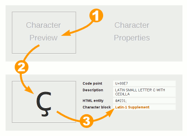
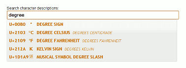
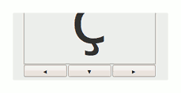
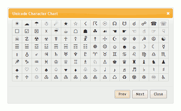

Unicode Character Finder
The best way to get familiar with the Unicode Character Finder is to play with it - type in the boxes, push the buttons and see where they lead you. The paragraphs below describe the available features.
Inspect Character Properties
The character preview area is intially blank. You can (1) click in the left-hand box; (2) type a character or copy & paste from another window; and (3) view the character properties on the right.

The Code point number (eg: U+00E7) uniquely identifies the character in the Unicode code charts.
The character Description comes from the Unicode character database. If the character has an alias (alternate description) this will be displayed also.
The HTML entity is one form you can use to represent the character in the source of an HTML page. Of course if you've set up your page encoding properly then you could just paste the character in.
The UTF-8 numbers are hex-encoded bytes of the codepoint expressed in UTF-8.
The UTF-16 numbers are hex-encoded short (2 byte) integers of the codepoint expressed in UTF-16.
The Character block is the descriptive name for the group of characters that this one belongs to. The name is a clickable link to the PDF file on the Unicode web site that illustrates and describes all the characters in the block.
Search for a Character
You can search the character descriptions by simply typing some text in the search box. After a short delay, the first 10 matches will be displayed.

A number of different types of searches are possible:
| Search Type | Example | Notes |
|---|---|---|
| Text match | degree | Find characters with the word 'degree' in the description. Not case sensitive |
| Regular expression | /colou?r/ | Match descriptions which contain 'color' or 'colour' |
| /\bcap\b/ | Match descriptions which contain the word 'cap' but not words like capital or escape | |
| Hex code | 20AC | Exact match for a character code in hex |
| UTF8 hex bytes | E2 82 AC | Exact match for a character code encoded as UTF8 hex bytes |
| Decimal code | 8364 | Exact match for a character code in decimal |
| Numeric entity | é | HTML/XML-style numeric character entity |
| Named entity | é | (X)HTML-style named character entity – these can be case sensitive and should usually be entered in lower case. |
Unfortunately the character description searchs are not exhaustive since the data file does not include a description for every character.
Browse the Code Charts
When a character is displayed in the character preview area, three buttons are available beneath it:

The 'Prev' button will display the character that precedes the current selection in the character chart. For example if the character 'Y' is displayed, pressing this button will display 'X'.
Similarly, the 'Next' button will display the character that follows the current selection.
You can also use the scrollwheel on your mouse to cycle through the next and previous characters, or Ctrl+scrollwheel to cycle through the code blocks.
The 'Chart' button will display the section of the character chart which includes the currently selected character.

You can click on characters in this code chart to examine their properties.
The Next and Prev buttons display the the next and previous pages of the code chart respectively.
Bookmarks
You can bookmark a link to a particular character or search query. Here are some example links to demonstrate the URL formats:
- ?c=U+20AC — Hex codepoint
- ?c=8364 — Decimal codepoint
- ?c=uD834uDF06 — Hex surrogate pair
- ?q=check — Search query
Look for the § symbols next to the character preview box and the search box - these are bookmarkable links.
Other Unicode Resources
- The codepoints.net site has a wealth of information about each character.
- If you can't find a particular character here, but know what it looks like, you could go to shapecatcher.com and try drawing the character in their visual search engine.